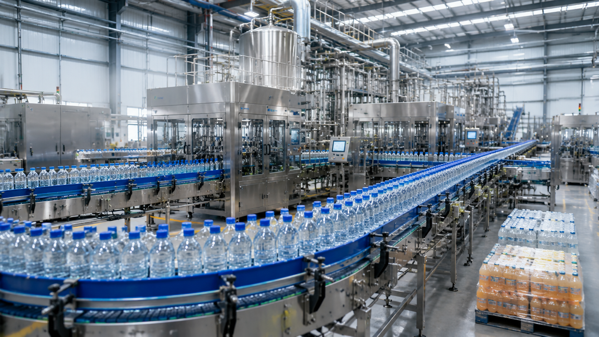

Beverage Production Line Cost: How Much Investment Is Needed to Build a Bottling Factory?

Summary
One of the first questions investors and factory owners ask before building a beverage manufacturing plant is:
"How much does a complete beverage production line cost?"
The answer is not a single number.
The investment required for a bottling factory depends on many factors:
Production capacity
Beverage type
Automation level
Factory size
Equipment configuration
Packaging requirements
Future expansion plans
A small semi-automatic filling system and a fully automated beverage factory are completely different investments.
This article explains the major factors affecting beverage production line cost, how manufacturers should evaluate investment decisions, and why a properly designed turnkey beverage production system can deliver higher long-term ROI.
Technology
- Why Beverage Factory Investment Is Difficult to Estimate
- Many investors expect a simple answer:
- "How much does a beverage production line cost?"
- However
- beverage manufacturing projects are highly customized.
- The biggest mistake is comparing equipment prices without considering the entire production system.
- Challenge 1: Different Production Capacities Require Different Investments
- A factory producing:
- 3
- 000 bottles/hour and 36
- 000 bottles/hour
- have completely different requirements.
- Higher capacity requires:
- Larger filling systems
- Faster conveyors
- Bigger packaging systems
- More advanced automation
- Higher factory infrastructure requirements
- Challenge 2: Different Products Need Different Technology
- A bottled water factory is different from:
- Juice production
- Carbonated drinks
- Energy drinks
- Dairy beverages
- Each product requires different:
- Processing systems
- Filling technology
- Sterilization methods
- Quality control standards
- Challenge 3: Automation Level Changes Total Investment
- Factories can choose different automation levels:
- Manual Production
- Low initial investment.
- However:
- Higher labor dependency
- Lower efficiency
- Difficult expansion
- Semi-Automatic Production
- Balance between:
- Investment
- Labor requirement
- Production capacity
- Fully Automated Production
- Higher initial investment.
- Benefits:
- Higher output
- Lower labor cost
- Better consistency
- Easier management
- Challenge 4: Equipment Alone Is Not a Factory
- A common mistake is purchasing individual machines.
- A successful beverage factory requires integration between:
- Production equipment
- Packaging
- Logistics
- Quality control
- Warehouse
Challenge
Building a Competitive Beverage Factory in a Changing Market
The beverage manufacturing industry is becoming increasingly competitive.
Factories are facing several challenges:
1. Increasing Market Competition
Consumers today expect:
More product choices
Better quality
Faster product availability
More customized beverage options
Manufacturers must build flexible production capabilities rather than relying on traditional mass production models.
2. Rising Labor Costs
Many manufacturing regions are experiencing:
Increasing labor costs
Difficulty recruiting production workers
Higher dependence on skilled operators
Manual production models are becoming less competitive.
3. Quality and Food Safety Requirements
Modern beverage manufacturers must achieve:
Stable product quality
Production traceability
Consistent filling accuracy
Reliable packaging performance
This requires more than experienced workers. It requires controlled and automated production systems.
4. Factory Expansion Challenges
Many companies struggle when scaling production because their original factory design was not prepared for:
Higher production capacity
Additional product categories
Automation upgrades
Digital management
A modern beverage factory must be designed for future growth.
Solution
How to Evaluate Beverage Production Line Investment Correctly
The correct approach is not asking:
"How much is one machine?"
The correct question is:
"How much investment is required to build a production system that achieves my business goals?"
Factor 1: Define Production Capacity
Capacity is the first investment decision.
Example:
Small Beverage Factory
3,000-6,000 bottles/hour
Suitable for:
Regional brands
Startup beverage companies
New market testing
Medium Beverage Factory
12,000-24,000 bottles/hour
Suitable for：
Growing beverage brands
Commercial production
Large Beverage Factory
30,000+ bottles/hour
Suitable for:
National brands
Export-oriented manufacturers
Factor 2: Select Appropriate Automation Level
Investment should match business strategy.
A startup may prioritize:
Lower initial investment
A large manufacturer may prioritize:
Lower operating cost
Higher production efficiency
Factor 3: Define Project Scope
A beverage factory investment can range from:
Single Equipment Purchase
Example:
Filling machine
Production Line
Including:
Filling
Capping
Labeling
Packaging
Complete Turnkey Factory
Including:
Factory design
Production line
Packaging
Automation
Warehouse
Project management
Factor 4: Calculate Long-Term ROI
The lowest purchase price is not always the best investment.
A better evaluation considers:
Labor savings
Output increase
Quality improvement
Waste reduction
Production stability
Workflow & Layout
Typical Beverage Factory Investment Scope
A complete beverage production project may include:
Raw Material Preparation
↓
Water Treatment / Beverage Processing
↓
PET Preform Handling
↓
Bottle Blow Molding
↓
Filling & Capping
↓
Inspection
↓
Labeling
↓
Packaging
↓
Palletizing
↓
Warehouse Storage
↓
Distribution
Example Factory Layout Planning
A professional layout considers:
Production Area
For:
Processing
Filling
Packaging
Logistics Area
For:
Raw material receiving
Finished product storage
Quality Area
For:
Testing
Inspection
Future Expansion Area
Reserved space for:
Additional lines
Automation upgrades
Results & ROI
- Why Higher Initial Investment Can Create Better Returns
- Many investors focus only on equipment price.
- However
- the real value comes from operational performance.
- Example:
- A fully automated beverage production project:
- Initial investment: ≈ $1 million
- Potential benefits:
- 1. Reduced Labor Cost
- Automation reduces dependence on:
- Operators
- Manual handling
- Repetitive work
- 2. Increased Production Output
- Higher automation enables:
- Continuous production
- Faster cycle time
- Higher utilization
- 3. Reduced Product Loss
- Automation improves:
- Filling accuracy
- Packaging consistency
- Process control
- 4. Better Factory Management
- Digital systems provide:
- Production data
- Equipment status
- Quality information
- 5. Easier Future Expansion
- A well-designed factory can add:
- New products
- Additional capacity
- Smart automation modules
Equipment List
- A complete beverage production line investment may include:
- 1. Beverage Processing Equipment
- Water treatment system
- Mixing system
- CIP system
- Sterilization system
- 2. Bottle Production Equipment
- PET preform handling system
- Blow molding machine
- Bottle conveying system
- 3. Filling & Packaging Equipment
- Filling machine
- Capping machine
- Bottle inspection system
- Labeling machine
- Shrink wrapping machine
- Cartoning machine
- 4. Automation Equipment
- Conveyor system
- Robot palletizer
- AGV system
- ASRS warehouse system
- 5. Digital Factory System
- PLC control
- SCADA monitoring
- MES integration
Project Overview / Opening
Understanding Beverage Factory Investment Before Starting a Project
Building a beverage factory is a major industrial investment.
Before purchasing equipment, investors need to understand:
Market demand
Production targets
Technology selection
Factory layout
Automation strategy
A successful beverage factory is not created by buying the cheapest equipment.
It is created by designing a production system that can operate efficiently for many years.
Key Points
- Five Factors Determining Beverage Production Line Cost
- 1. Production Capacity
- Higher output requires larger and faster systems.
- 2. Beverage Category
- Water, juice, carbonated drinks, and dairy products require different technologies.
- 3. Automation Level
- Automation influences:
- Initial investment
- Labor cost
- Production efficiency
- 4. Project Scope
- Single machine:
- ↓
- Production line:
- ↓
- Complete turnkey factory
- 5. Supplier Capability
- A reliable supplier should provide:
- Engineering design
- Equipment integration
- Installation support
- Project management
Implementation / Workflow
From Budget Planning to Beverage Factory Delivery
A professional beverage project normally follows:
Step 1: Project Requirement Analysis
Define:
Product type
Capacity
Market target
Investment budget
Step 2: Production Line Design
Develop:
Process flow
Equipment configuration
Factory layout
Step 3: Investment Evaluation
Analyze:
Equipment cost
Operating cost
Expected ROI
Step 4: Supplier Selection
Evaluate:
Manufacturing capability
Engineering experience
Delivery ability
Step 5: Project Execution
Includes:
Equipment manufacturing
FAT testing
Installation support
Production commissioning
Customer Value / Results
A properly planned beverage production project helps manufacturers achieve:
Clear Investment Planning
Understand where money should be invested.
Lower Project Risk
Avoid purchasing incompatible equipment.
Higher Production Efficiency
Create a stable automated production system.
Better Long-Term Profitability
Balance:
Investment cost
Operating efficiency
Future growth
Stronger Market Competitiveness
Build factories capable of responding to changing beverage demand.
Conclusion / Next Step
The cost of a beverage production line depends on much more than equipment price. Production capacity, beverage type, automation level, factory planning, and future expansion strategy all influence the final investment.
Choosing the right manufacturing partner is critical because a beverage factory project requires coordination between multiple systems, suppliers, and technologies.
We help manufacturers worldwide design, source, integrate, and deliver industrial automation projects from China's manufacturing ecosystem.
Our support includes:
Beverage production line design
Equipment supplier selection
Production system integration
Factory automation solutions
Packaging and logistics automation
Complete project coordination
Whether you are planning a new bottling factory, expanding existing production capacity, or evaluating beverage factory investment costs, our team can help you develop a reliable and cost-effective solution.
📩 Need a customized beverage production line budget?
Visit our Contact page and submit your project requirements to discuss your factory investment plan.
SEO Title
Beverage Production Line Cost: How Much Investment Is Needed to Build a Bottling Factory?
SEO Description
One of the first questions investors and factory owners ask before building a beverage manufacturing plant is:
"How much does a complete beverage production line cost?"
The answer is not a single number.
The investment required for a bottling factory depends on many factors:
Production capacity
Beverage type
Automation level
Factory size
Equipment configuration
Packaging requirements
Future expansion plans
A small semi-automatic filling system and a fully automated beverage factory are completely different investments.
This article explains the major factors affecting beverage production line cost, how manufacturers should evaluate investment decisions, and why a properly designed turnkey beverage production system can deliver higher long-term ROI.
Related Blog
Start with Your Business Challenge
Tell us about your warehouse, factory, or production requirements. We'll help you explore practical automation solutions and relevant project references.